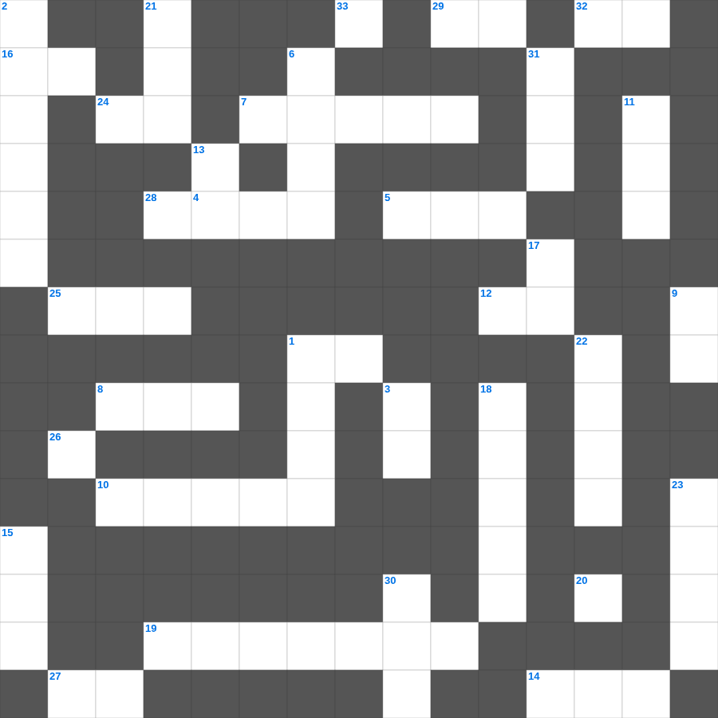

예레미야애가: 슬픔 중의 소망
📌 서비스 정의
십자가로세로는 교회 주보와 주일학교에서 사용할 수 있는 성경 기반 가로세로 퍼즐 서비스입니다. 성경 인물, 사건, 핵심 구절을 바탕으로 제작되었습니다. 온라인 풀이 및 인쇄 기능을 제공합니다.
예레미야애가의 말씀을 퀴즈로 배우는 예레미야애가 성경 퍼즐입니다. 가로 힌트와 세로 힌트를 보고 35개의 단어를 맞춰보세요. 인쇄도 가능하고 정답 확인도 바로 되니 소그룹 모임이나 가정 예배 시간에도 활용하실 수 있습니다.

📝 가로 힌트
1. 예수님의 육신의 아버지
4. 평안히 눕고 이것하기도 하리니
5. 바울의 1차 전교 여행 출발지
7. 여호수아가 성을 돌자 무너진 사건
7. 이스라엘 백성이 요단강을 건너 처음 도착한 성
8. 하나님이 약속하신 젖과 꿀이 흐르는 땅
10. 열 가지 재앙 중 마지막 재앙
12. 안식일에 밀 이삭을 잘라 먹은 제자들
14. 보라 내가 만물을 이것하게 하노라
16. 다윗이 연주하던 악기
19. 사도 바울의 자비량 사역 직업
20. 너는 나 외에는 다른 이것들을 두지 말라
24. 기드온의 300 용사가 든 것: 항아리와 이것
25. 솔로몬이 성전 건축을 위해 백향목을 가져온 곳
27. 정해진 성경 본문을 읽는 것
28. 집을 나가 방탕하게 살다 돌아온 아들
29. 여호와 이것: 치료하시는 하나님
32. 데살로니가 사람들이 베레아 사람보다 더 간절히 본 것
33. 네 이웃의 집을 이것내지 말라
📝 세로 힌트
1. 마태 마가 누가 다음 복음서
2. 내게 능력 주시는 자 안에서 내가 모든 것을 이것할 수 있느니라
3. 지성소와 성소를 나누는 두꺼운 천
6. 기름 부음 받은 자
9. 베드로와 안드레의 직업
11. 요시야 왕이 성전 수리 중 발견한 것
13. 다윗이 왕이 되기 전의 직업
15. 야곱이 라반을 피해 도망치다 세운 돌기둥
17. 민족이 민족을 나라가 나라를 대적하여 이것이 일어남
18. 바울과 실라가 감옥에서 한 행동
21. 사드락과 친구들이 던져진 곳
22. 천사 가브리엘이 마리아에게 예수 탄생을 알림
23. 기뻐하라 내가 다시 말하노니 기뻐하라
26. 오직 정의를 이것 같이 흐르게 할지어다
30. 예수님이 자라나신 동네
31. 바울이 강가에서 루디아를 만난 성
🧑🏫 교회 교육 자료 활용
이 퍼즐은 주일학교 교재 추천 자료로 활용할 수 있고, 주일학교 주보에 넣기 좋은 분량으로 구성되어 있습니다. 수업용 주일학교 교안에 활동지로 붙이거나, 예배 후 복습용 주일학교 공과교재로 바로 사용할 수 있습니다.
🏷️ 키워드
예레미야애가 성경 퍼즐, 예레미야애가, 십자가로세로, 성경퀴즈, 말씀퀴즈, 가로세로퍼즐, 주일학교 교재 추천, 주일학교 주보, 주일학교 교안, 주일학교 공과교재